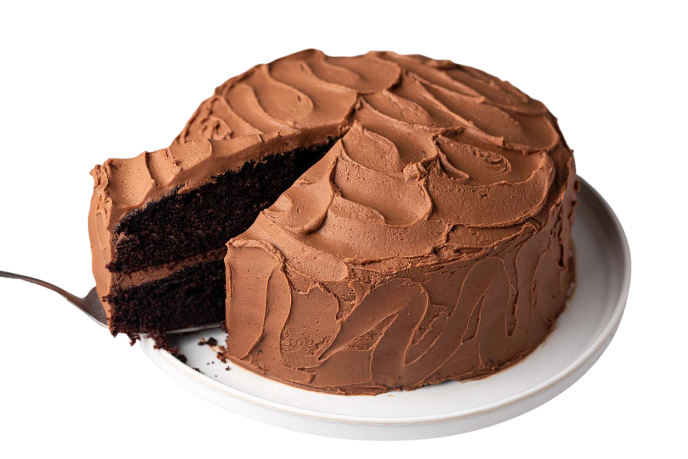

Chocolate Cake Recipe

Description
I'm not going to kid you, this makes a very rich, moist chocolate cake recipe. So if you are a faint of heart chocolate cake person, this is not the cake for you.
Based on the Old Fashioned Hershey's recipe, I sort of went a bit heavy-handed with some changes testing cake after cake until I got it just the way I wanted it, but the end result was oh so worth it. The crumbs left on the plate gave that away.
Ingredients
- All-purpose flour
- Sugar
- Baking powder
- Unsweetened cocoa powder
- Baking soda
- Espresso powder
- Milk
- Oil
- Eggs
- Vanilla extract
- Boiling water
- Salt
Steps
- Prep. Preheat the oven to 350º F. Prepare two 9-inch cake pans by spraying with baking spray or buttering and lightly flouring.
- Whisk dry ingredients. Add flour, sugar, cocoa, baking powder, baking soda, salt and espresso powder to a large bowl or the bowl of a stand mixer. Whisk through to combine or, using your paddle attachment, stir through flour mixture until combined well.
- Mix in wet ingredients. Add milk, vegetable oil, eggs, and vanilla to flour mixture and mix together on medium speed until well combined. Reduce speed and carefully add boiling water to the cake batter until well combined.
- Bake. Distribute cake batter evenly between the two prepared cake pans. Bake for 30-35 minutes, until a toothpick or cake tester inserted in the center of the chocolate cake comes out clean.
- Frost. Remove from the oven and allow to cool for about 10 minutes, remove from the pan and cool completely. Frost with Chocolate Buttercream Frosting.
Back to the Recipes